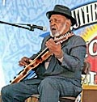
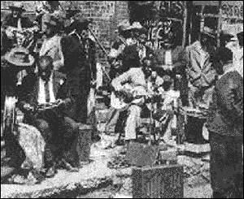
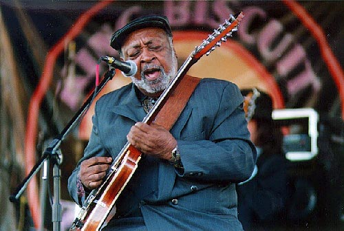

25 марта 2000г. праздновали в Чикагском Доме блюза (Chicago House of Blues) день рождения блюзмэна: 85 лет исполнилось Роберту-младшему Локвуду.Роберт-младший по имени, а не по фамилии: он единственный ученик легендарного Роберта Джонсона, его законный наследник в музыке и незаконный пасынок по семейному кодексу (Он моложе Джонсона всего на четыре года; гонимый псами ада, легендарный Роберт в своих странствиях тянулся к женщинам, которые могли бы заменить ему и жену, и мать). Роберт-младший не стал имитатором или прямым продолжателем стиля Роберта-легендарного. Он сопровождал отчима в нескольких "блюзовых походах"; он сам в 15 лет бродил по Дельте, выступая в паре с другим историческим персонажем - Санни Боем Уилльямсоном II; он выпустил первую пластинку в 1941 году в Чикаго, и позже работал и записывался здесь со звездами чикагской плеяды.

Его гитара звучит на множестве классических пластинок чикагского блюза, неполный список которых занял бы большую часть этого выпуска новостей. Кантри-блюзмэн по основному стилю, он испытал влияние и джаза, и нового городского блюза. Непосредственный участник событий, уже превратившихся в блюзовые легенды, Локвуд давно уже выступает экспертом по истории блюза; только за последнюю пятилетку он появился в документальных фильмах: "Чествование Мадди Уотерса" ("Tribute To Muddy Waters"), "Миссиссиппская река песен" ("Mississippi River of Song") и "Гончие ада идут за мной по следу" ("Hellhounds on My Trail") - последний о Роберте Джонсоне, разумеется. Настоящий блюзмэн, Локвуд, уже став героем встреч молодежи с ветеранами, на пенсию все еще не собирается. Его последний альбом "Надо мне найти себе бабу" (I GOT TO FIND ME WOMAN) стал ярчайшим событием прошлого года, удостоен премии им.В.К.Хэнди и номинирован на Грэмми.Можно утверждать, что чествование Роберта-младшего Локвуда стало одним из выдающихся концертных событий в блюзе-2000. Юбилейный концерт собрал блестящее созвездие имен, всего числом около полусотни. Вот только самые известные из них: Jimmie Lee Robinson, Jimmy Burns, Katherine Davis, Larry Taylor, Little Smokey Smothers, Sam Lay, Shirley King, Sugar Blue, Billy Boy Arnold, Little Ed, Otis Clay, Otis Rush, Ted Harvey, и группа The Kinsey Report. На сцену вышел и 90-летний Henry Townsend, записавший первую пластинку еще в 1929 году, и который часто выступал вместе с Локвудом в 30-х. Фирма Blues Guitar/Open Natural G Musical Instruments презентовала Локвуду 12-струнную гитары ручной работы (Локвуд предпочитает 12-струнку).

Бывшие новости |
Январь-Февраль 1999 |
Март 1999 |
Ноябрь-Декабрь 1999
Январь 2000 |
Февраль 2000 |
Март 2000 |
Апрель 2000